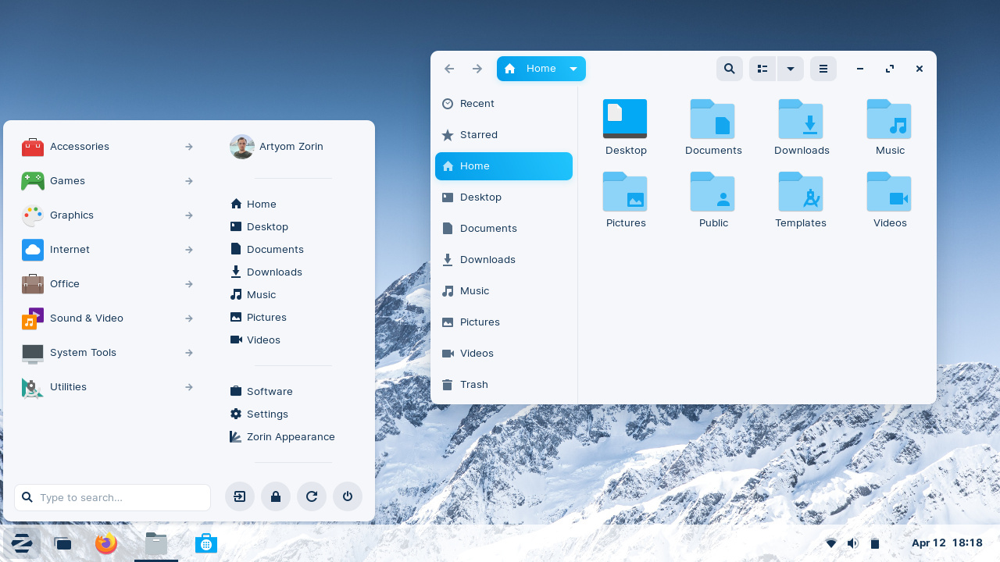

Zorin OS
Zorin OS is a Linux distribution based on Ubuntu. It uses a GNOME 3 or XFCE 4 desktop environment as default, although the desktop is heavily customized in order to help Windows and macOS users transition to Linux easily. Wine and PlayOnLinux can be easily installed in Zorin OS, allowing users to run compatible Windows software for ease of transition from Windows. Zorin OS's creators maintain 3 free editions of the operating system, and a "Pro" edition for purchase.
The current releases are Zorin OS 16 Pro, Zorin OS 16 Pro Lite, Zorin OS 16 Core, Zorin OS 16 Core Lite, Zorin OS 15.3 Education and Zorin OS 15.3 Education Lite. The new editions continue to use the Ubuntu-based Linux kernel and GNOME or XFCE interface.

Zorin OS 15 desktop
Zorin OS is fully graphical, with a graphical installer. For stability and security, it follows the long-term releases of the main Ubuntu system. It uses its own software repositories as well as Ubuntu's repositories. These repositories are accessible through the common "apt-get" commands via the Linux terminal, or a GUI-based software manager that provides an appstore-like experience for users who don't wish to use the terminal.
The OS also comes with a number of desktop layouts or themes to modify the desktop environment - The themes let users change the interface to resemble those of Microsoft Windows, macOS, or Ubuntu and allow the interface to be familiar regardless of the previous system a user has come from. As with all GNOME-based desktop environments, the look and feel of the desktop can be modified easily using GNOME extensions.